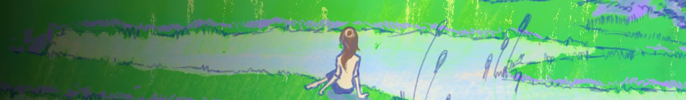

"marie" è un progetto lofi hip-hop nato a Dicembre 2025, concentrandosi principalmente su beat per dormire, studiare, bossa nova e lo-fi folk.
Lavoro direttamente con case discografiche come Lofi Girl, Sleep Tales, The Jazz Hop Café, e molte altre (20+) e dal 2025 ho rilasciato più di 60 tracce.
Rilascio continuamente nuova musica e partecipo a compilation e playlist. Un mio grande obiettivo per il futuro è quello di fondare la mia etichetta discografica.